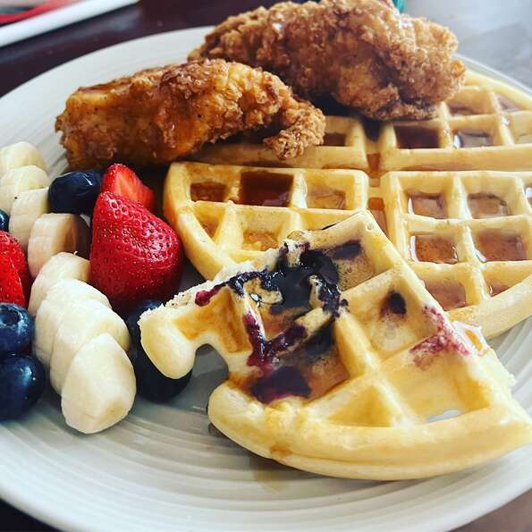

Waffles

Description
Waffles are a popular breakfast food, often topped with butter and maple syrup or fruit preserves.
Waffles also can serve as a base for savoury mixtures such as seafood or poultry in sauce.
Ingredients
- 2 eggs
- 2 cups all-purpose flour
- 1 ¾ cups milk
- ½ cup vegetable oil
- 1 tablespoon white sugar
- 4 tablespoons baking powder
- ¼ teaspoon salt
- ½ teaspoon vanilla extract
Steps
- Preheat waffle iron.
- Beat eggs in large bowl with hand beater until fluffy.
- Beat in flour, milk, vegetable oil, sugar, baking powder, salt and vanilla, just until smooth.
- Spray preheated waffle iron with non-stick cooking spray.
- Pour mix onto hot waffle iron. Cook until golden brown.
- Serve hot
Return to main page